CODING AGENTS AS PIXEL WORLD MODELS
traex/GPT-6.1-Sol · common50_0009
点击播放 · 原生 RGB 像素
逐轮保存的候选
回放视频、检查图与代码变化。
每份候选均可单独播放。实际图片检查记录在下方工具轨迹中。
候选 01播放与检查图
点击播放 · 原生 RGB 像素
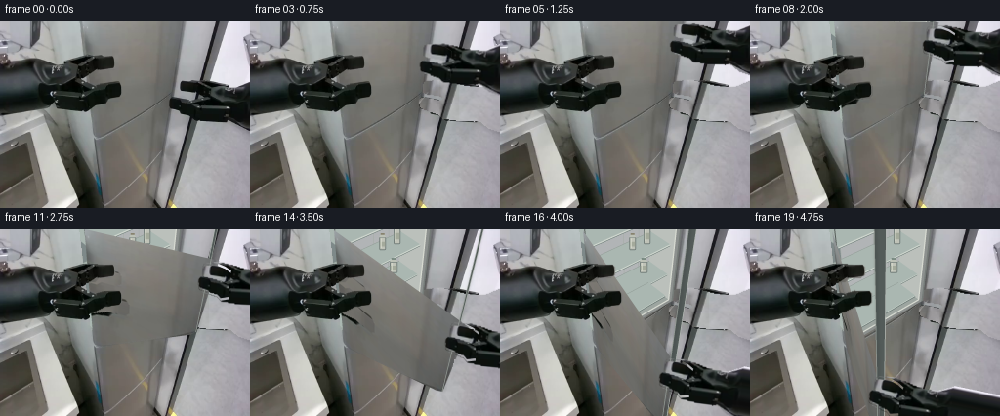
展开代码变化
--- 上一保存版本
+++ 本次保存版本
@@ -0,0 +1,309 @@
+"""Deterministic image-based rigid-body refrigerator opening animation.
+All geometry and textures are constructed from the supplied first RGB frame.
+"""
+from pathlib import Path
+import math
+import numpy as np
+import cv2
+from PIL import Image, ImageDraw, ImageFilter
+import artifact_io
+
+ROOT = Path(__file__).resolve().parent
+S = 4
+W,H = 256,192
+REF = np.array(Image.open(ROOT/'first_frame.png').convert('RGB'))
+SIZE=(W*S,H*S)
+rng=np.random.default_rng(907)
+
+def mask_poly(points, scale=1):
+ m=Image.new('L',(W*scale,H*scale))
+ ImageDraw.Draw(m).polygon([(round(x*scale),round(y*scale)) for x,y in points], fill=255)
+ return np.array(m)
+
+# Two foreground rigid end effectors. The left one remains at the exact
+# position and with the exact original appearance throughout.
+right_outline=[(256,61),(247,65),(242,67),(231,68),(218,66),(207,63),
+ (198,61),(188,61),(180,62),(178,63),(177,66),(177,73),(181,75),
+ (194,77),(198,79),(195,82),(187,80),(178,78),(175,79),(173,81),
+ (174,88),(178,91),(187,94),(193,96),(197,100),(211,102),(229,103),
+ (234,102),(244,110),(256,114)]
+left_outline=[(0,39),(10,39),(17,39),(23,37),(36,39),(48,42),(53,41),
+ (64,39),(72,36),(82,35),(87,36),(99,36),(115,37),(117,39),(117,47),
+ (113,50),(101,50),(97,54),(86,56),(81,60),(87,66),(97,66),(107,63),
+ (122,64),(124,66),(124,75),(121,78),(106,80),(100,83),(89,88),(83,91),
+ (75,92),(64,90),(56,88),(49,89),(37,91),(18,93),(0,96)]
+rm=mask_poly(right_outline)
+lm=mask_poly(left_outline)
+
+# Replace only the region hidden by the right gripper. A lower unobstructed
+# strip of the same fixed workspace provides the texture and the pole.
+yy,xx=np.mgrid[0:H,0:W].astype(np.float32)
+patch=cv2.remap(REF,xx-16.7,yy+60.,cv2.INTER_LINEAR,borderMode=cv2.BORDER_REFLECT_101)
+# The room lighting gradually grows brighter toward the upper right.
+correction=np.clip((130-yy)/70,0,1)[...,None]*np.array([7,7,9])
+patch=np.clip(patch.astype(float)+correction,0,255).astype(np.uint8)
+# Small edge blend; the actual robot pixels are all replaced.
+blur=cv2.GaussianBlur(rm,(5,5),.7).astype(float)/255
+blur=np.maximum(blur,rm/255.)
+clean=np.clip(REF*(1-blur[...,None])+patch*blur[...,None],0,255).astype(np.uint8)
+# Continue the narrow black support post behind the extracted hand.
+# This is a texture copy, preserving the original lighting on its edges.
+for y in range(59,115):
+ for x in range(194,214):
+ if rm[y,x]:
+ sx=x-16.7; sy=y+60
+ clean[y,x]=cv2.getRectSubPix(REF,(1,1),(sx,sy))[0,0]
+
+# A single silver door is a rigid planar surface. Orthogonal vanishing
+# directions, recovered from the first-frame vertical and horizontal seams,
+# define a Euclidean hinge rotation (not an arbitrary shape morph).
+f=350.
+C=np.array([128.,96.])
+vp_x=(96*324-f*f+128*7-324*(120+98*46/78))/(7-324*46/78)
+vp_y=120-(vp_x-98)*46/78
+U=np.array([vp_x-128,vp_y-96,f]); U/=np.linalg.norm(U)
+V=np.array([7.,324.,f]); V/=np.linalg.norm(V)
+N=np.cross(U,V)
+ORIGIN=np.array([-30/f*3,24/f*3,3.])
+r=np.array([48/f,-22/f,1.])
+L=np.linalg.lstsq(np.stack([r,-U],axis=1),ORIGIN,rcond=None)[0][1]
+TOP=-2.16
+
+def project(x):
+ x=np.asarray(x)
+ return C+f*x[..., :2]/x[...,2,None]
+
+def world(u,v,depth=0.,theta=0.):
+ du=U*math.cos(theta)-N*math.sin(theta)
+ normal=N*math.cos(theta)+U*math.sin(theta)
+ return ORIGIN+u*du+v*V+depth*normal
+
+def qpoint(u,v,d=0.,theta=0.):
+ return project(world(u,v,d,theta))
+
+def face_quad(theta=0.,depth=0.,u0=0.,u1=None,v0=TOP,v1=0.):
+ if u1 is None: u1=L
+ return np.array([qpoint(u0,v0,depth,theta),qpoint(u1,v0,depth,theta),
+ qpoint(u1,v1,depth,theta),qpoint(u0,v1,depth,theta)],np.float32)
+SRC_QUAD=face_quad()
+# Fill only the door texture hidden behind the stationary left gripper.
+door_tex=cv2.inpaint(REF,lm,8,cv2.INPAINT_TELEA)
+# Avoid blurred shadows left by the inpaint inside the brushed-metal face.
+for y in range(30,97):
+ for x in range(83,126):
+ if lm[y,x]:
+ sx=min(164,max(125,x+48))
+ sy=min(67,max(0,y-25))
+ # Smooth interpolation across the metal's original light gradient.
+ a=REF[sy,sx].astype(float)
+ b=REF[min(110,y),min(160,max(127,x+42))].astype(float)
+ door_tex[y,x]=np.clip(.5*a+.5*b+np.array([1,1,1]),0,255)
+tex_hi=cv2.resize(door_tex,SIZE,interpolation=cv2.INTER_CUBIC)
+# The input surface is slightly rounded at its lower hinge-side corner.
+door_shape=[(85.7,-4),(90.7,57),(95.0,105),(96.1,115),(98.3,120),
+ (102.0,119),(171.9,78),(175.9,74),(190.8,-4)]
+door_alpha=mask_poly(door_shape,S)
+
+# Geometry-only interior, seen only after the outside door swings away.
+# Soft grey liner, real perspective shelves, and muted stored containers.
+noise=rng.normal(0,1.,(H*S,W*S)).astype(np.float32)
+
+def polygon(im,points,fill,outline=None,width=1):
+ draw=ImageDraw.Draw(im)
+ p=[tuple((np.asarray(v)*S).tolist()) for v in points]
+ draw.polygon(p,fill=fill)
+ if outline: draw.line(p+[p[0]],fill=outline,width=max(1,round(width*S)),joint='curve')
+
+def line(im,points,fill,width=1):
+ ImageDraw.Draw(im).line([tuple((np.asarray(v)*S).tolist()) for v in points],fill=fill,width=max(1,round(width*S)))
+
+def quad_uv(u0,u1,v0,v1,d=0):
+ return np.array([qpoint(u0,v0,d),qpoint(u1,v0,d),qpoint(u1,v1,d),qpoint(u0,v1,d)])
+
+def liner_texture(quad, dark=False):
+ mask=mask_poly(quad,S)/255.
+ y,x=np.mgrid[0:H*S,0:W*S]
+ base=(159 if dark else 176)+9*(x/(W*S))+7*(y/(H*S))+noise*.65
+ rgb=np.stack([base-3,base,base+1.5],axis=-1)
+ return np.clip(rgb,0,255).astype(np.uint8), mask
+
+def bottle(im,u,v,d,height=.18,radius=.043,cap=(92,112,129)):
+ # Cylindrical bottles stand on the horizontal shelf in world coordinates.
+ c=qpoint(u,v-height/2,d); b=qpoint(u,v,d); t=qpoint(u,v-height,d)
+ left=qpoint(u-radius,v-height/2,d);right=qpoint(u+radius,v-height/2,d)
+ rw=max(1.9,np.linalg.norm(right-left)/2)
+ hh=max(7.,np.linalg.norm(b-t))
+ x,y=c
+ overlay=Image.new('RGBA',SIZE)
+ draw=ImageDraw.Draw(overlay)
+ p=lambda box:tuple(round(z*S) for z in box)
+ draw.rounded_rectangle(p((x-rw,y-hh*.33,x+rw,y+hh*.49)),radius=1.3*S,fill=(192,195,184,255),outline=(116,127,123,255),width=1*S)
+ draw.polygon([(round(a*S),round(b*S)) for a,b in [(x-rw,y-hh*.32),(x-rw*.52,y-hh*.49),(x+rw*.52,y-hh*.49),(x+rw,y-hh*.32)]],fill=(188,193,182,255))
+ draw.rectangle(p((x-rw*.55,y-hh*.57,x+rw*.55,y-hh*.48)),fill=cap)
+ draw.rectangle(p((x-rw*.80,y-hh*.03,x+rw*.80,y+hh*.26)),fill=(164,170,155,255))
+ draw.line([(round((x-rw*.5)*S),round((y-hh*.23)*S)),(round((x-rw*.5)*S),round((y+hh*.35)*S))],fill=(224,226,210,210),width=S)
+ im.alpha_composite(overlay)
+
+interior=Image.fromarray(cv2.resize(clean,SIZE,interpolation=cv2.INTER_NEAREST)).convert('RGBA')
+# Outer silver rim matches the supplied original door seam and body.
+polygon(interior,face_quad(),(140,144,142,255))
+u0,u1=.052,L-.050
+v0,v1=TOP+.06,-.045
+front=quad_uv(u0,u1,v0,v1)
+polygon(interior,front,(82,91,91,255))
+D=.29
+rear=quad_uv(u0+.015,u1-.014,v0+.028,v1-.012,D)
+rear_rgb,rear_m=liner_texture(rear)
+interior.alpha_composite(Image.fromarray(np.dstack([rear_rgb,(rear_m*255).astype(np.uint8)]),'RGBA'))
+# Right and left reveal walls and base, drawn as real quadrilaterals.
+polygon(interior,[front[0],rear[0],rear[3],front[3]],(126,137,137,255))
+polygon(interior,[front[1],rear[1],rear[2],front[2]],(187,192,187,255))
+polygon(interior,[front[3],rear[3],rear[2],front[2]],(157,165,160,255))
+# Subtle upright rear molded channels.
+for u in [L*.24,L*.60,L*.78]:
+ line(interior,[qpoint(u,TOP+.1,D-.002),qpoint(u,-.07,D-.002)],(167,174,170,255),.7)
+# Shelves from upper to lower. Each top and lip belongs to a single rigid plane.
+for shelf_index,v in enumerate([-.98,-.66,-.34,-.075]):
+ p=[qpoint(u0+.006,v,.04),qpoint(u1-.01,v,.04),qpoint(u1-.01,v,D),qpoint(u0+.006,v,D)]
+ polygon(interior,p,(170,183,177,255))
+ line(interior,[p[3],p[2]],(146,157,151,255),.7)
+ lip=[p[0],p[1],qpoint(u1-.01,v+.013,.04),qpoint(u0+.006,v+.013,.04)]
+ polygon(interior,lip,(207,214,206,255))
+ line(interior,[lip[3],lip[2]],(109,124,120,255),.75)
+ if shelf_index==1:
+ bottle(interior,L*.77,v,.17,height=.20,radius=.034,cap=(124,135,149))
+ bottle(interior,L*.61,v,.18,height=.15,radius=.031,cap=(135,130,110))
+ if shelf_index==2:
+ bottle(interior,L*.76,v,.19,height=.16,radius=.040,cap=(103,121,112))
+# Door opening gasket and narrow silver outside frame.
+line(interior,[front[0],front[1],front[2],front[3]],(215,218,209,255),1.2)
+line(interior,[qpoint(L,TOP),qpoint(L,0)],(117,123,120,255),1.6)
+line(interior,[qpoint(.022,TOP),qpoint(.022,-.03)],(86,92,89,255),1.0)
+interior_np=np.array(interior.convert('RGB'))
+
+# End effector texture in a wider transparent image. Extend the observed
+# cylindrical forearm offscreen, so reaching never tears it from its support.
+EW=380
+arm=np.zeros((H*S,EW*S,4),np.uint8)
+arm[:,:W*S,:3]=cv2.resize(REF,SIZE,interpolation=cv2.INTER_CUBIC)
+arm[:,:W*S,3]=cv2.resize(rm,SIZE,interpolation=cv2.INTER_LINEAR)
+for x in range(W*S,EW*S):
+ xf=x/S
+ center=87.5+(xf-256)*.07
+ rad=26.7+(xf-256)*.007
+ for y in range(max(0,int((center-rad)*S)),min(H*S,int((center+rad)*S)+1)):
+ yf=y/S
+ sy=np.clip(87.5+(yf-center)*26.7/rad,61,114)
+ pix=cv2.getRectSubPix(REF,(1,1),(254.,float(sy)))[0,0].astype(float)
+ arm[y,x,:3]=np.clip(pix*(1-.00035*(xf-256)),0,255)
+ arm[y,x,3]=255
+# Fingers are independently rigid: opposing translations actuate the pinch.
+upper_pts=[(176,62),(192,62),(200,65),(206,69),(205,77),(193,78),(180,75),(176,73)]
+lower_pts=[(172,78),(186,79),(196,82),(204,86),(205,98),(195,100),(187,96),(176,92),(172,88)]
+fmasks=[]
+for pp in [upper_pts,lower_pts]:
+ small=mask_poly(pp,S)
+ ext=np.zeros(arm.shape[:2],np.uint8);ext[:,:W*S]=small
+ ext=np.minimum(ext,arm[...,3])
+ fmasks.append(ext)
+body=arm.copy()
+for m in fmasks:body[...,3]=np.minimum(body[...,3],255-m)
+
+def composite_rgba(dst,src):
+ a=src[...,3:4].astype(np.float32)/255
+ return np.clip(dst*(1-a)+src[...,:3]*a,0,255).astype(np.uint8)
+
+def smooth(t):
+ t=np.clip(t,0,1)
+ return t*t*(3-2*t)
+
+# Target grip at the accessible outer upper edge of the top silver door.
+start=np.array([180.,78.])
+goal=np.array([181.,20.])
+ray=np.array([(goal[0]-128)/f,(goal[1]-96)/f,1.])
+sol=np.linalg.lstsq(np.stack([ray,-U,-V],axis=1),ORIGIN,rcond=None)[0]
+grip_u,grip_v=sol[1],sol[2]
+left_hi=cv2.resize(REF,SIZE,interpolation=cv2.INTER_NEAREST)
+left_alpha=cv2.resize(lm,SIZE,interpolation=cv2.INTER_LINEAR)[...,None]/255.
+clean_hi=cv2.resize(clean,SIZE,interpolation=cv2.INTER_NEAREST)
+
+frames=[REF.copy()]
+for i in range(1,20):
+ reach=smooth(i/5.)
+ pinch=smooth((i-5)/2.)
+ opening=smooth((i-7)/12.)
+ angle=math.radians(110)*opening
+ if i<=7:
+ target=start+(goal-start)*reach
+ else:
+ target=qpoint(grip_u,grip_v,theta=angle)
+ # Entire wrist/forearm retains its shape. The very slight roll follows
+ # the handle tangentially while the robot holds the same pinch point.
+ roll=math.radians(8)*opening
+ scale=1+.025*opening
+ cc,ss=math.cos(roll)*scale,math.sin(roll)*scale
+ rot=np.array([[cc,-ss],[ss,cc]])
+ M=np.concatenate([rot,((target-rot@start)*S)[:,None]],axis=1).astype(np.float32)
+ # Closed at the start, then replace the hidden region with the fixed cavity.
+ im=interior_np.copy() if opening>0 else clean_hi.copy()
+ if opening==0:
+ # No change at all to the still-closed door before the grasp completes.
+ im=clean_hi.copy()
+ else:
+ dst_quad=face_quad(angle)
+ # Side thickness and dark elastic seal are extruded rigid geometry.
+ pil=Image.fromarray(im).convert('RGBA')
+ side=np.array([qpoint(L,TOP,0,angle),qpoint(L,0,0,angle),
+ qpoint(L,0,.043,angle),qpoint(L,TOP,.043,angle)])
+ polygon(pil,side,(83,91,89,255))
+ line(pil,[side[2],side[3]],(177,183,178,255),.75)
+ # Small physically attached shadow of the open outer edge.
+ shadow=Image.new('RGBA',SIZE)
+ polygon(shadow,[side[0],side[1],side[1]+[2.4,.3],side[0]+[2.4,.3]],(21,27,25,35))
+ shadow=shadow.filter(ImageFilter.GaussianBlur(1.4*S))
+ pil.alpha_composite(shadow)
+ im=np.array(pil.convert('RGB'))
+ mat=cv2.getPerspectiveTransform(SRC_QUAD*S,dst_quad*S)
+ warped=cv2.warpPerspective(tex_hi,mat,SIZE,flags=cv2.INTER_LINEAR,borderMode=cv2.BORDER_REPLICATE)
+ wa=cv2.warpPerspective(door_alpha,mat,SIZE,flags=cv2.INTER_LINEAR)
+ # Silver's broad diffuse reflectance changes modestly with rigid yaw.
+ lighting=1-.073*math.sin(angle)
+ warped=np.clip(warped.astype(float)*lighting+1.3*opening,0,255).astype(np.uint8)
+ im=composite_rgba(im,np.dstack([warped,wa]))
+ pil=Image.fromarray(im)
+ line(pil,[qpoint(L,TOP,0,angle),qpoint(L,0,0,angle)],(147,154,148),.8)
+ # Existing lower door seam is fixed and not dragged with the top door.
+ im=np.array(pil)
+ # A soft contact shadow travels with the hand only, not with the camera.
+ layers=[body]
+ for j,m in enumerate(fmasks):
+ layer=arm.copy();layer[...,3]=m
+ inward=(2.5 if j==0 else -2.5)*pinch
+ shift=np.array([[1.,0.,0.],[0.,1.,inward*S]],np.float32)
+ layers.append(cv2.warpAffine(layer,shift,(EW*S,H*S),flags=cv2.INTER_LINEAR))
+ # Restore the entire stationary left foreground arm, occluding the door.
+ im=np.clip(im*(1-left_alpha)+left_hi*left_alpha,0,255).astype(np.uint8)
+ for layer in layers:
+ moved=cv2.warpAffine(layer,M,SIZE,flags=cv2.INTER_LINEAR,borderMode=cv2.BORDER_CONSTANT)
+ im=composite_rgba(im,moved)
+ frame=cv2.resize(im,(W,H),interpolation=cv2.INTER_AREA)
+ # The rest of the camera image must remain strictly stationary.
+ active=np.maximum(rm,mask_poly(door_shape))
+ if opening>0:
+ active=np.maximum(active,mask_poly(face_quad(angle)))
+ active=np.maximum(active,mask_poly(side))
+ transformed=cv2.warpAffine(arm[...,3],M,SIZE,flags=cv2.INTER_LINEAR)
+ arm_area=cv2.resize(transformed,(W,H),interpolation=cv2.INTER_AREA)
+ active=np.maximum(active,arm_area)
+ active=cv2.dilate(active,np.ones((5,5),np.uint8))
+ frame[active==0]=REF[active==0]
+ # Pixels well inside the left arm are copied, not resynthesized.
+ fixed=cv2.erode(lm,np.ones((3,3),np.uint8))>0
+ frame[fixed]=REF[fixed]
+ frames.append(frame)
+
+frames=np.asarray(frames,dtype=np.uint8)
+assert np.array_equal(frames[0],REF)
+artifact_io.save(frames,ROOT)
+# Larger intermediate preview is useful for inspecting the rigid contact.
+Image.fromarray(frames[19]).resize((1024,768)).save(ROOT/'.tmp/final_large.png')
候选 02播放与检查图
点击播放 · 原生 RGB 像素

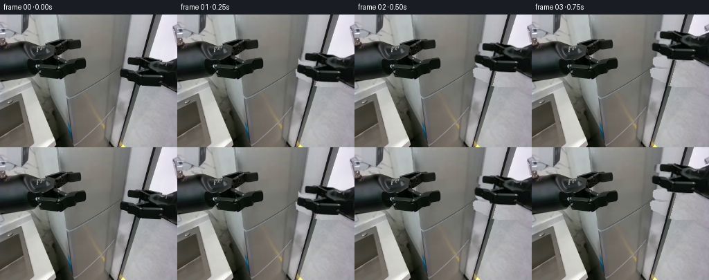
展开代码变化
--- 上一保存版本
+++ 本次保存版本
@@ -22,11 +22,13 @@
# Two foreground rigid end effectors. The left one remains at the exact
# position and with the exact original appearance throughout.
-right_outline=[(256,61),(247,65),(242,67),(231,68),(218,66),(207,63),
- (198,61),(188,61),(180,62),(178,63),(177,66),(177,73),(181,75),
- (194,77),(198,79),(195,82),(187,80),(178,78),(175,79),(173,81),
- (174,88),(178,91),(187,94),(193,96),(197,100),(211,102),(229,103),
- (234,102),(244,110),(256,114)]
+right_outline=[(256,60.5),(247,64.0),(242,67.3),(236,67.8),(231,67.2),
+ (225,63.9),(214,62.7),(207,61.2),(198,61.0),(188,61.3),(183,62.0),
+ (180.5,61.8),(177.0,63.0),(176.0,65.5),(176.3,70.2),(179,73.4),
+ (187,74.3),(197,75.0),(200,77),(198,79),(192,80.4),(185,79.9),
+ (178.5,78.1),(175.2,78.5),(172.3,80.2),(172.8,87.7),(176,90.5),
+ (184,92.8),(189,95.5),(194,98.1),(195.5,100.8),(207,102.7),
+ (230,103.0),(235,102.8),(244,109.6),(256,115.3)]
left_outline=[(0,39),(10,39),(17,39),(23,37),(36,39),(48,42),(53,41),
(64,39),(72,36),(82,35),(87,36),(99,36),(115,37),(117,39),(117,47),
(113,50),(101,50),(97,54),(86,56),(81,60),(87,66),(97,66),(107,63),
@@ -35,24 +37,39 @@
rm=mask_poly(right_outline)
lm=mask_poly(left_outline)
-# Replace only the region hidden by the right gripper. A lower unobstructed
-# strip of the same fixed workspace provides the texture and the pole.
+# Reconstruct the small occluded background from visible adjacent floor and
+# wall textures. A continuous linear pole is projected through this region.
yy,xx=np.mgrid[0:H,0:W].astype(np.float32)
-patch=cv2.remap(REF,xx-16.7,yy+60.,cv2.INTER_LINEAR,borderMode=cv2.BORDER_REFLECT_101)
-# The room lighting gradually grows brighter toward the upper right.
-correction=np.clip((130-yy)/70,0,1)[...,None]*np.array([7,7,9])
-patch=np.clip(patch.astype(float)+correction,0,255).astype(np.uint8)
-# Small edge blend; the actual robot pixels are all replaced.
-blur=cv2.GaussianBlur(rm,(5,5),.7).astype(float)/255
-blur=np.maximum(blur,rm/255.)
+fx,fy=xx.copy(),yy.copy()
+# Away from the post the fixed wall/floor is sampled well below the hand.
+fx=np.maximum(174.,xx-5.)
+fy=np.minimum(191.,yy+70.)
+floor=cv2.remap(REF,fx,fy,cv2.INTER_LINEAR,borderMode=cv2.BORDER_REFLECT_101)
+# Blend the wall above y=69 with the unobstructed pale upper right wall.
+wall=cv2.remap(REF,xx,np.maximum(3.,yy-53.),cv2.INTER_LINEAR,borderMode=cv2.BORDER_REFLECT_101)
+a=np.clip((69-yy)/12,0,1)[...,None]
+patch=np.clip(floor*(1-a)+wall*a,0,255).astype(np.uint8)
+# Silver side casing to the left of the narrow support post.
+for y in range(58,119):
+ for x in range(168,257):
+ pole=223.25-.277*y
+ if x<pole-4:
+ sx=x+16.6;sy=y-60
+ if y>=100:
+ sx=x-16.6;sy=y+60
+ sy=float(np.clip(sy,0,191));sx=float(np.clip(sx,0,255))
+ patch[y,x]=cv2.getRectSubPix(REF,(1,1),(sx,sy))[0,0]
+# Consistent photographed post profile, including its bright side edge.
+for y in range(57,120):
+ pole=223.25-.277*y
+ for x in range(max(0,int(pole-4)),min(W,int(pole+4)+1)):
+ sx=x+(.277*(y-42));sy=42.
+ patch[y,x]=cv2.getRectSubPix(REF,(1,1),(float(sx),sy))[0,0]
+# Include the subpixel antialias halo of the original hand in removal mask.
+remove=cv2.dilate(rm,np.ones((3,3),np.uint8))
+blur=cv2.GaussianBlur(remove,(5,5),.7).astype(float)/255
+blur=np.maximum(blur,remove/255.)
clean=np.clip(REF*(1-blur[...,None])+patch*blur[...,None],0,255).astype(np.uint8)
-# Continue the narrow black support post behind the extracted hand.
-# This is a texture copy, preserving the original lighting on its edges.
-for y in range(59,115):
- for x in range(194,214):
- if rm[y,x]:
- sx=x-16.7; sy=y+60
- clean[y,x]=cv2.getRectSubPix(REF,(1,1),(sx,sy))[0,0]
# A single silver door is a rigid planar surface. Orthogonal vanishing
# directions, recovered from the first-frame vertical and horizontal seams,
@@ -123,8 +140,8 @@
def liner_texture(quad, dark=False):
mask=mask_poly(quad,S)/255.
y,x=np.mgrid[0:H*S,0:W*S]
- base=(159 if dark else 176)+9*(x/(W*S))+7*(y/(H*S))+noise*.65
- rgb=np.stack([base-3,base,base+1.5],axis=-1)
+ base=(155 if dark else 171)+7*(x/(W*S))+5*(y/(H*S))+noise*.85
+ rgb=np.stack([base+1,base+1,base+.5],axis=-1)
return np.clip(rgb,0,255).astype(np.uint8), mask
def bottle(im,u,v,d,height=.18,radius=.043,cap=(92,112,129)):
@@ -154,7 +171,7 @@
D=.29
rear=quad_uv(u0+.015,u1-.014,v0+.028,v1-.012,D)
rear_rgb,rear_m=liner_texture(rear)
-interior.alpha_composite(Image.fromarray(np.dstack([rear_rgb,(rear_m*255).astype(np.uint8)]),'RGBA'))
+interior.alpha_composite(Image.fromarray(np.dstack([rear_rgb,(rear_m*255).astype(np.uint8)])))
# Right and left reveal walls and base, drawn as real quadrilaterals.
polygon(interior,[front[0],rear[0],rear[3],front[3]],(126,137,137,255))
polygon(interior,[front[1],rear[1],rear[2],front[2]],(187,192,187,255))
@@ -165,10 +182,10 @@
# Shelves from upper to lower. Each top and lip belongs to a single rigid plane.
for shelf_index,v in enumerate([-.98,-.66,-.34,-.075]):
p=[qpoint(u0+.006,v,.04),qpoint(u1-.01,v,.04),qpoint(u1-.01,v,D),qpoint(u0+.006,v,D)]
- polygon(interior,p,(170,183,177,255))
+ polygon(interior,p,(177,183,181,255))
line(interior,[p[3],p[2]],(146,157,151,255),.7)
lip=[p[0],p[1],qpoint(u1-.01,v+.013,.04),qpoint(u0+.006,v+.013,.04)]
- polygon(interior,lip,(207,214,206,255))
+ polygon(interior,lip,(206,210,207,255))
line(interior,[lip[3],lip[2]],(109,124,120,255),.75)
if shelf_index==1:
bottle(interior,L*.77,v,.17,height=.20,radius=.034,cap=(124,135,149))
@@ -198,8 +215,8 @@
arm[y,x,:3]=np.clip(pix*(1-.00035*(xf-256)),0,255)
arm[y,x,3]=255
# Fingers are independently rigid: opposing translations actuate the pinch.
-upper_pts=[(176,62),(192,62),(200,65),(206,69),(205,77),(193,78),(180,75),(176,73)]
-lower_pts=[(172,78),(186,79),(196,82),(204,86),(205,98),(195,100),(187,96),(176,92),(172,88)]
+upper_pts=[(175,61),(192,61),(200,64),(205,69),(203,75),(192,76),(179,75),(175,72)]
+lower_pts=[(171,77),(185,78),(195,81),(202,86),(203,96),(194,99),(186,94),(175,91),(171,87)]
fmasks=[]
for pp in [upper_pts,lower_pts]:
small=mask_poly(pp,S)
@@ -288,7 +305,7 @@
im=composite_rgba(im,moved)
frame=cv2.resize(im,(W,H),interpolation=cv2.INTER_AREA)
# The rest of the camera image must remain strictly stationary.
- active=np.maximum(rm,mask_poly(door_shape))
+ active=np.maximum(remove,mask_poly(door_shape))
if opening>0:
active=np.maximum(active,mask_poly(face_quad(angle)))
active=np.maximum(active,mask_poly(side))
候选 03播放与检查图
点击播放 · 原生 RGB 像素
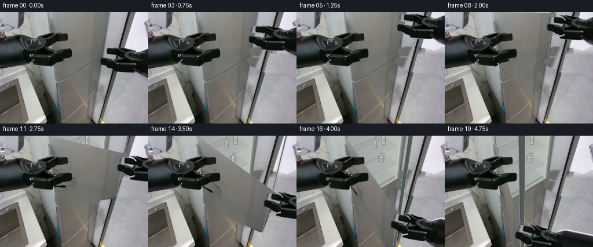
展开代码变化
--- 上一保存版本
+++ 本次保存版本
@@ -37,37 +37,36 @@
rm=mask_poly(right_outline)
lm=mask_poly(left_outline)
-# Reconstruct the small occluded background from visible adjacent floor and
-# wall textures. A continuous linear pole is projected through this region.
+# Reconstruct the occluded wall and floor with the scene's actual textures.
+# The narrow photographed pole is maintained as one continuous straight line.
yy,xx=np.mgrid[0:H,0:W].astype(np.float32)
-fx,fy=xx.copy(),yy.copy()
-# Away from the post the fixed wall/floor is sampled well below the hand.
-fx=np.maximum(174.,xx-5.)
-fy=np.minimum(191.,yy+70.)
-floor=cv2.remap(REF,fx,fy,cv2.INTER_LINEAR,borderMode=cv2.BORDER_REFLECT_101)
-# Blend the wall above y=69 with the unobstructed pale upper right wall.
-wall=cv2.remap(REF,xx,np.maximum(3.,yy-53.),cv2.INTER_LINEAR,borderMode=cv2.BORDER_REFLECT_101)
-a=np.clip((69-yy)/12,0,1)[...,None]
-patch=np.clip(floor*(1-a)+wall*a,0,255).astype(np.uint8)
-# Silver side casing to the left of the narrow support post.
-for y in range(58,119):
+fx=xx.copy();fy=np.clip(yy+69,0,191)
+pole=223.25-.277*yy
+fx=np.where(xx<pole-4,xx, np.maximum(xx,207))
+floor=cv2.remap(REF,fx.astype(np.float32),fy.astype(np.float32),cv2.INTER_LINEAR,borderMode=cv2.BORDER_REFLECT_101)
+# A pale wall is occluded by the cylindrical wrist only at the upper right.
+wall_y=np.clip(yy-34,0,30)
+wall_x=np.clip(xx+2,215,250)
+wall=cv2.remap(REF,wall_x.astype(np.float32),wall_y.astype(np.float32),cv2.INTER_LINEAR)
+blend=np.clip((yy-58)/15,0,1)[...,None]
+patch=np.clip(wall*(1-blend)+floor*blend,0,255).astype(np.uint8)
+# Texture of the silver fridge side is sampled from its unobstructed strip.
+for y in range(57,119):
for x in range(168,257):
- pole=223.25-.277*y
- if x<pole-4:
- sx=x+16.6;sy=y-60
- if y>=100:
- sx=x-16.6;sy=y+60
- sy=float(np.clip(sy,0,191));sx=float(np.clip(sx,0,255))
- patch[y,x]=cv2.getRectSubPix(REF,(1,1),(sx,sy))[0,0]
-# Consistent photographed post profile, including its bright side edge.
-for y in range(57,120):
- pole=223.25-.277*y
- for x in range(max(0,int(pole-4)),min(W,int(pole+4)+1)):
- sx=x+(.277*(y-42));sy=42.
- patch[y,x]=cv2.getRectSubPix(REF,(1,1),(float(sx),sy))[0,0]
-# Include the subpixel antialias halo of the original hand in removal mask.
+ px=223.25-.277*y
+ if x<px-4:
+ sx=186.+(x-px+4)*.42
+ sy=30.+(y-57)*.40
+ patch[y,x]=cv2.getRectSubPix(REF,(1,1),(float(sx),float(sy)))[0,0]
+# Continuous actual post profile, including both anti-aliased edges.
+for y in range(56,122):
+ px=223.25-.277*y
+ for x in range(max(0,int(px-4)),min(W,int(px+5)+1)):
+ sx=x+.277*(y-42)
+ patch[y,x]=cv2.getRectSubPix(REF,(1,1),(float(sx),42.))[0,0]
+# The small fill is regularized before blending so its border is not a cutout.
remove=cv2.dilate(rm,np.ones((3,3),np.uint8))
-blur=cv2.GaussianBlur(remove,(5,5),.7).astype(float)/255
+blur=cv2.GaussianBlur(remove,(13,13),2.2).astype(float)/255
blur=np.maximum(blur,remove/255.)
clean=np.clip(REF*(1-blur[...,None])+patch*blur[...,None],0,255).astype(np.uint8)
@@ -197,6 +196,13 @@
line(interior,[qpoint(L,TOP),qpoint(L,0)],(117,123,120,255),1.6)
line(interior,[qpoint(.022,TOP),qpoint(.022,-.03)],(86,92,89,255),1.0)
interior_np=np.array(interior.convert('RGB'))
+# Small optical blur and a broad ambient-light gradient match the source lens.
+cavity_mask=mask_poly(face_quad(),S)/255.
+soft=cv2.GaussianBlur(interior_np,(5,5),.70*S)
+yi,xi=np.mgrid[0:H*S,0:W*S]
+shade=1-.085*np.clip((175*S-xi)/(85*S),0,1)-.027*np.clip(yi/(H*S),0,1)
+soft=np.clip(soft.astype(float)*shade[...,None]+noise[...,None]*.35,0,255).astype(np.uint8)
+interior_np=np.clip(interior_np*(1-cavity_mask[...,None])+soft*cavity_mask[...,None],0,255).astype(np.uint8)
# End effector texture in a wider transparent image. Extend the observed
# cylindrical forearm offscreen, so reaching never tears it from its support.
候选 04播放与检查图
点击播放 · 原生 RGB 像素
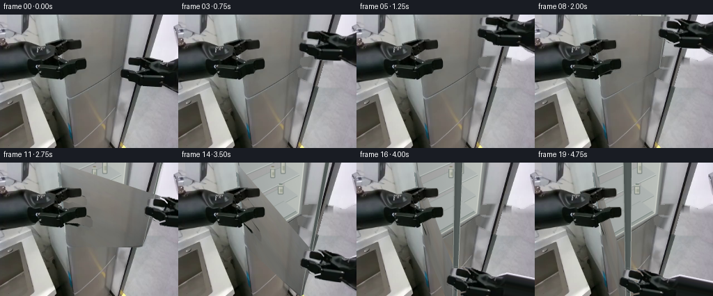
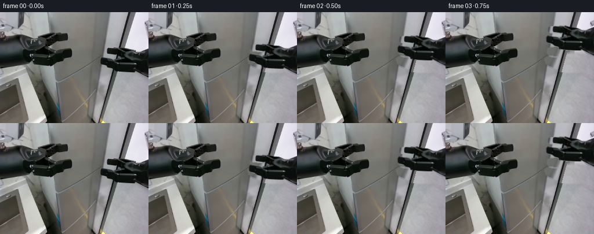
展开代码变化
--- 上一保存版本
+++ 本次保存版本
@@ -254,7 +254,7 @@
for i in range(1,20):
reach=smooth(i/5.)
pinch=smooth((i-5)/2.)
- opening=smooth((i-7)/12.)
+ opening=smooth((i-7)/10.)
angle=math.radians(110)*opening
if i<=7:
target=start+(goal-start)*reach
可观测工具轨迹
实际执行的命令与返回图片。
命令 1exit 0
/bin/bash -lc "ls -la && cat prompt.txt && printf '\\n---RULES---\\n' && cat GENERATION_RULES.md"
命令 2exit 0
/bin/bash -lc "cat task_spec.json && cat artifact_io.py && python - <<'PY'
from PIL import Image
im=Image.open('first_frame.png'); print(im.size); im.resize((1024,768)).save('.tmp/first_large.png')
PY"命令 3exit 0
/bin/bash -lc "python - <<'PY' import importlib.util for p in ['numpy','PIL','cv2','scipy']: print(p, bool(importlib.util.find_spec(p))) PY"
命令 4exit 0
/bin/bash -lc "python - <<'PY'
from PIL import Image
im=Image.open('first_frame.png'); im.crop((160,40,256,125)).resize((768,680)).save('.tmp/right.png')
PY"命令 5exit 1
/bin/bash -lc "python - <<'PY'
import numpy as np
f=250;c=np.array([128,96])
vy=(96*324-62500+128*7-324*(120+98*46/78))/(7-324*46/78)
y=120-(vy-98)*46/78
U=np.array([vy-128,y-96,f]);U/=np.linalg.norm(U)
V=np.array([7,324,f]);V/=np.linalg.norm(V)
H=np.array([-.36,.288,3])
r=np.array([(176-128)/f,(74-96)/f,1])
q=np.linalg.lstsq(np.stack([r,-U],axis=1),H,rcond=None)[0];print(vy,y,U,V,np.dot(U,V),q)
N=np.cross(U,V); print('normal',N)
L=q[1]
proj=lambda X: c+f*X[:2]/X[2]
for a in [0,15,30,45,60,75]:
A=np.deg2rad(a); W=U*np.cos(A)-N*np.sin(A)
print(a,proj(H+L*W), proj(H+L*W-.95*V), proj(H-.95*V))
PY"命令 6exit 0
/bin/bash -lc "python - <<'PY'
import numpy as np
f=250.;c=np.array([128,96])
vy=(96*324-62500+128*7-324*(120+98*46/78))/(7-324*46/78)
y=120-(vy-98)*46/78
U=np.array([vy-128,y-96,f]);U/=np.linalg.norm(U)
V=np.array([7.,324.,f]);V/=np.linalg.norm(V)
H=np.array([-.36,.288,3])
r=np.array([(176-128)/f,(74-96)/f,1])
q=np.linalg.lstsq(np.stack([r,-U],axis=1),H,rcond=None)[0];print(vy,y,U,V,np.dot(U,V),q)
N=np.cross(U,V); print('normal',N)
L=q[1]
proj=lambda X: c+f*X[:2]/X[2]
for a in [0,15,30,45,60,75]:
A=np.deg2rad(a); W=U*np.cos(A)-N*np.sin(A)
print(a,proj(H+L*W), proj(H+L*W-.95*V), proj(H-.95*V))
PY"命令 7exit 0
/bin/bash -lc "python - <<'PY' import numpy as np f=250.; c=np.array([128,96]); U=np.array([.73816066,-.42204647,.52630373]); V=np.array([.01710245,.79159893,.61080164]);N=np.cross(U,V); H=np.array([-.36,.288,3]);L=1.46913326 proj=lambda X:c+f*X[:2]/X[2] for a in [0,30,60,75,90,100,110,120]: W=U*np.cos(np.deg2rad(a))-N*np.sin(np.deg2rad(a)) print(a,'bot',proj(H+L*W),'mid',proj(H+L*W-.48*V),'top',proj(H+L*W-1.65*V),'hingetop',proj(H-1.65*V)) PY"
命令 8exit 0
/bin/bash -lc "python - <<'PY'
import numpy as np
c=np.array([128.,96.]);H=np.array([-.36,.288,3.])
for f in [70.,90.,110.,130.,160.,200.]:
vh=(96*324-f*f+128*7-324*(120+98*46/78))/(7-324*46/78);y=120-(vh-98)*46/78
U=np.array([vh-128,y-96,f]);U/=np.linalg.norm(U);V=np.array([7.,324.,f]);V/=np.linalg.norm(V);N=np.cross(U,V)
H=np.array([(98-128)/f*3,(120-96)/f*3,3.]);r=np.array([(176-128)/f,(74-96)/f,1]);q=np.linalg.lstsq(np.stack([r,-U],axis=1),H,rcond=None)[0];L=q[1]
print('f',f,'width',L,'U',U)
for a in [50,80,95,110]:
W=U*np.cos(np.deg2rad(a))-N*np.sin(np.deg2rad(a));P=H+L*W;xy=c+f*P[:2]/P[2];print(a,np.round(xy,1),end=' / ')
print()
PY"命令 9exit 0
/bin/bash -lc "python - <<'PY'
import numpy as np
for f in [250.,300.,350.,450.,600.]:
vh=(96*324-f*f+128*7-324*(120+98*46/78))/(7-324*46/78);y=120-(vh-98)*46/78
U=np.array([vh-128,y-96,f]);U/=np.linalg.norm(U);V=np.array([7.,324.,f]);V/=np.linalg.norm(V);N=np.cross(U,V)
H=np.array([(98-128)/f*3,(120-96)/f*3,3.]);r=np.array([(176-128)/f,(74-96)/f,1]);q=np.linalg.lstsq(np.stack([r,-U],axis=1),H,rcond=None)[0];L=q[1]
# contact pos (179,81) enough bottom lip
R=np.array([(181-128)/f,(64-96)/f,1]);sol=np.linalg.lstsq(np.stack([R,-U,-V],axis=1),H,rcond=None)[0];vv=sol[2]
print('f',f, 'L',L,'v',vv,'N',N)
for a in [0,45,80,105,115]:
W=U*np.cos(np.deg2rad(a))-N*np.sin(np.deg2rad(a));P=H+L*W+vv*V;xy=np.array([128,96])+f*P[:2]/P[2];print(a,np.round(xy,1),end=' / ')
print()
PY"命令 10exit 0
/bin/bash -lc "python - <<'PY' import numpy as np f=350.;c=np.array([128,96]);vp=(96*324-f*f+128*7-324*(120+98*46/78))/(7-324*46/78);yy=120-(vp-98)*46/78 U=np.array([vp-128,yy-96,f]);U/=np.linalg.norm(U);V=np.array([7.,324.,f]);V/=np.linalg.norm(V);N=np.cross(U,V);H=np.array([-30/f*3,24/f*3,3.]);r=np.array([48/f,-22/f,1]);L=np.linalg.lstsq(np.stack([r,-U],axis=1),H,rcond=None)[0][1];P=lambda X:c+f*X[:2]/X[2] # v top given projected hinge top y=-30 rr=np.array([(83-128)/f,(-30-96)/f,1]);z=np.linalg.lstsq(np.stack([rr,-V],axis=1),H,rcond=None)[0][1];print(U,V,N,L,z,'hinge',P(H+z*V)) for a in [0,30,60,80,95,105]: W=U*np.cos(np.deg2rad(a))-N*np.sin(np.deg2rad(a));print(a,'top',P(H+z*V+L*W),'bottom',P(H+L*W)) PY"
命令 11exit 0
/bin/bash -lc "python - <<'PY'
import numpy as np
f=350.;c=np.array([128,96]);vp=(96*324-f*f+128*7-324*(120+98*46/78))/(7-324*46/78);yy=120-(vp-98)*46/78
U=np.array([vp-128,yy-96,f]);U/=np.linalg.norm(U);V=np.array([7.,324.,f]);V/=np.linalg.norm(V);N=np.cross(U,V);H=np.array([-30/f*3,24/f*3,3.]);r=np.array([48/f,-22/f,1]);L=np.linalg.lstsq(np.stack([r,-U],axis=1),H,rcond=None)[0][1];P=lambda X:c+f*X[:2]/X[2]
for xy in [(181,38),(181,50),(180,61),(181,20)]:
rr=np.array([(xy[0]-128)/f,(xy[1]-96)/f,1]);sol=np.linalg.lstsq(np.stack([rr,-U,-V],axis=1),H,rcond=None)[0];print('orig',xy,'sol',sol)
for a in [0,45,80,100,110]:
W=U*np.cos(np.deg2rad(a))-N*np.sin(np.deg2rad(a));print(a,np.round(P(H+sol[1]*W+sol[2]*V),1),end=' / ')
print()
PY"命令 12exit 0
/bin/bash -lc "cat > generate.py <<'PY'
\"\"\"Deterministic image-based rigid-body refrigerator opening animation.
All geometry and textures are constructed from the supplied first RGB frame.
\"\"\"
from pathlib import Path
import math
import numpy as np
import cv2
from PIL import Image, ImageDraw, ImageFilter
import artifact_io
ROOT = Path(__file__).resolve().parent
S = 4
W,H = 256,192
REF = np.array(Image.open(ROOT/'first_frame.png').convert('RGB'))
SIZE=(W*S,H*S)
rng=np.random.default_rng(907)
def mask_poly(points, scale=1):
m=Image.new('L',(W*scale,H*scale))
ImageDraw.Draw(m).polygon([(round(x*scale),round(y*scale)) for x,y in points], fill=255)
return np.array(m)
# Two foreground rigid end effectors. The left one remains at the exact
# position and with the exact original appearance throughout.
right_outline=[(256,61),(247,65),(242,67),(231,68),(218,66),(207,63),
(198,61),(188,61),(180,62),(178,63),(177,66),(177,73),(181,75),
(194,77),(198,79),(195,82),(187,80),(178,78),(175,79),(173,81),
(174,88),(178,91),(187,94),(193,96),(197,100),(211,102),(229,103),
(234,102),(244,110),(256,114)]
left_outline=[(0,39),(10,39),(17,39),(23,37),(36,39),(48,42),(53,41),
(64,39),(72,36),(82,35),(87,36),(99,36),(115,37),(117,39),(117,47),
(113,50),(101,50),(97,54),(86,56),(81,60),(87,66),(97,66),(107,63),
(122,64),(124,66),(124,75),(121,78),(106,80),(100,83),(89,88),(83,91),
(75,92),(64,90),(56,88),(49,89),(37,91),(18,93),(0,96)]
rm=mask_poly(right_outline)
lm=mask_poly(left_outline)
# Replace only the region hidden by the right gripper. A lower unobstructed
# strip of the same fixed workspace provides the texture and the pole.
yy,xx=np.mgrid[0:H,0:W].astype(np.float32)
patch=cv2.remap(REF,xx-16.7,yy+60.,cv2.INTER_LINEAR,borderMode=cv2.BORDER_REFLECT_101)
# The room lighting gradually grows brighter toward the upper right.
correction=np.clip((130-yy)/70,0,1)[...,None]*np.array([7,7,9])
patch=np.clip(patch.astype(float)+correction,0,255).astype(np.uint8)
# Small edge blend; the actual robot pixels are all replaced.
blur=cv2.GaussianBlur(rm,(5,5),.7).astype(float)/255
blur=np.maximum(blur,rm/255.)
clean=np.clip(REF*(1-blur[...,None])+patch*blur[...,None],0,255).astype(np.uint8)
# Continue the narrow black support post behind the extracted hand.
# This is a texture copy, preserving the original lighting on its edges.
for y in range(59,115):
for x in range(194,214):
if rm[y,x]:
sx=x-16.7; sy=y+60
clean[y,x]=cv2.getRectSubPix(REF,(1,1),(sx,sy))[0,0]
# A single silver door is a rigid planar surface. Orthogonal vanishing
# directions, recovered from the first-frame vertical and horizontal seams,
# define a Euclidean hinge rotation (not an arbitrary shape morph).
f=350.
C=np.array([128.,96.])
vp_x=(96*324-f*f+128*7-324*(120+98*46/78))/(7-324*46/78)
vp_y=120-(vp_x-98)*46/78
U=np.array([vp_x-128,vp_y-96,f]); U/=np.linalg.norm(U)
V=np.array([7.,324.,f]); V/=np.linalg.norm(V)
N=np.cross(U,V)
ORIGIN=np.array([-30/f*3,24/f*3,3.])
r=np.array([48/f,-22/f,1.])
L=np.linalg.lstsq(np.stack([r,-U],axis=1),ORIGIN,rcond=None)[0][1]
TOP=-2.16
def project(x):
x=np.asarray(x)
return C+f*x[..., :2]/x[...,2,None]
def world(u,v,depth=0.,theta=0.):
du=U*math.cos(theta)-N*math.sin(theta)
normal=N*math.cos(theta)+U*math.sin(theta)
return ORIGIN+u*du+v*V+depth*normal
def qpoint(u,v,d=0.,theta=0.):
return project(world(u,v,d,theta))
def face_quad(theta=0.,depth=0.,u0=0.,u1=None,v0=TOP,v1=0.):
if u1 is None: u1=L
return np.array([qpoint(u0,v0,depth,theta),qpoint(u1,v0,depth,theta),
qpoint(u1,v1,depth,theta),qpoint(u0,v1,depth,theta)],np.float32)
SRC_QUAD=face_quad()
# Fill only the door texture hidden behind the stationary left gripper.
door_tex=cv2.inpaint(REF,lm,8,cv2.INPAINT_TELEA)
# Avoid blurred shadows left by the inpaint inside the brushed-metal face.
for y in range(30,97):
for x in range(83,126):
if lm[y,x]:
sx=min(164,max(125,x+48))
sy=min(67,max(0,y-25))
# Smooth interpolation across the metal's original light gradient.
a=REF[sy,sx].astype(float)
b=REF[min(110,y),min(160,max(127,x+42))].astype(float)
door_tex[y,x]=np.clip(.5*a+.5*b+np.array([1,1,1]),0,255)
tex_hi=cv2.resize(door_tex,SIZE,interpolation=cv2.INTER_CUBIC)
# The input surface is slightly rounded at its lower hinge-side corner.
door_shape=[(85.7,-4),(90.7,57),(95.0,105),(96.1,115),(98.3,120),
(102.0,119),(171.9,78),(175.9,74),(190.8,-4)]
door_alpha=mask_poly(door_shape,S)
# Geometry-only interior, seen only after the outside door swings away.
# Soft grey liner, real perspective shelves, and muted stored containers.
noise=rng.normal(0,1.,(H*S,W*S)).astype(np.float32)
def polygon(im,points,fill,outline=None,width=1):
draw=ImageDraw.Draw(im)
p=[tuple((np.asarray(v)*S).tolist()) for v in points]
draw.polygon(p,fill=fill)
if outline: draw.line(p+[p[0]],fill=outline,width=max(1,round(width*S)),joint='curve')
def line(im,points,fill,width=1):
ImageDraw.Draw(im).line([tuple((np.asarray(v)*S).tolist()) for v in points],fill=fill,width=max(1,round(width*S)))
def quad_uv(u0,u1,v0,v1,d=0):
return np.array([qpoint(u0,v0,d),qpoint(u1,v0,d),qpoint(u1,v1,d),qpoint(u0,v1,d)])
def liner_texture(quad, dark=False):
mask=mask_poly(quad,S)/255.
y,x=np.mgrid[0:H*S,0:W*S]
base=(159 if dark else 176)+9*(x/(W*S))+7*(y/(H*S))+noise*.65
rgb=np.stack([base-3,base,base+1.5],axis=-1)
return np.clip(rgb,0,255).astype(np.uint8), mask
def bottle(im,u,v,d,height=.18,radius=.043,cap=(92,112,129)):
# Cylindrical bottles stand on the horizontal shelf in world coordinates.
c=qpoint(u,v-height/2,d); b=qpoint(u,v,d); t=qpoint(u,v-height,d)
left=qpoint(u-radius,v-height/2,d);right=qpoint(u+radius,v-height/2,d)
rw=max(1.9,np.linalg.norm(right-left)/2)
hh=max(7.,np.linalg.norm(b-t))
x,y=c
overlay=Image.new('RGBA',SIZE)
draw=ImageDraw.Draw(overlay)
p=lambda box:tuple(round(z*S) for z in box)
draw.rounded_rectangle(p((x-rw,y-hh*.33,x+rw,y+hh*.49)),radius=1.3*S,fill=(192,195,184,255),outline=(116,127,123,255),width=1*S)
draw.polygon([(round(a*S),round(b*S)) for a,b in [(x-rw,y-hh*.32),(x-rw*.52,y-hh*.49),(x+rw*.52,y-hh*.49),(x+rw,y-hh*.32)]],fill=(188,193,182,255))
draw.rectangle(p((x-rw*.55,y-hh*.57,x+rw*.55,y-hh*.48)),fill=cap)
draw.rectangle(p((x-rw*.80,y-hh*.03,x+rw*.80,y+hh*.26)),fill=(164,170,155,255))
draw.line([(round((x-rw*.5)*S),round((y-hh*.23)*S)),(round((x-rw*.5)*S),round((y+hh*.35)*S))],fill=(224,226,210,210),width=S)
im.alpha_composite(overlay)
interior=Image.fromarray(cv2.resize(clean,SIZE,interpolation=cv2.INTER_NEAREST)).convert('RGBA')
# Outer silver rim matches the supplied original door seam and body.
polygon(interior,face_quad(),(140,144,142,255))
u0,u1=.052,L-.050
v0,v1=TOP+.06,-.045
front=quad_uv(u0,u1,v0,v1)
polygon(interior,front,(82,91,91,255))
D=.29
rear=quad_uv(u0+.015,u1-.014,v0+.028,v1-.012,D)
rear_rgb,rear_m=liner_texture(rear)
interior.alpha_composite(Image.fromarray(np.dstack([rear_rgb,(rear_m*255).astype(np.uint8)]),'RGBA'))
# Right and left reveal walls and base, drawn as real quadrilaterals.
polygon(interior,[front[0],rear[0],rear[3],front[3]],(126,137,137,255))
polygon(interior,[front[1],rear[1],rear[2],front[2]],(187,192,187,255))
polygon(interior,[front[3],rear[3],rear[2],front[2]],(157,165,160,255))
# Subtle upright rear molded channels.
for u in [L*.24,L*.60,L*.78]:
line(interior,[qpoint(u,TOP+.1,D-.002),qpoint(u,-.07,D-.002)],(167,174,170,255),.7)
# Shelves from upper to lower. Each top and lip belongs to a single rigid plane.
for shelf_index,v in enumerate([-.98,-.66,-.34,-.075]):
p=[qpoint(u0+.006,v,.04),qpoint(u1-.01,v,.04),qpoint(u1-.01,v,D),qpoint(u0+.006,v,D)]
polygon(interior,p,(170,183,177,255))
line(interior,[p[3],p[2]],(146,157,151,255),.7)
lip=[p[0],p[1],qpoint(u1-.01,v+.013,.04),qpoint(u0+.006,v+.013,.04)]
polygon(interior,lip,(207,214,206,255))
line(interior,[lip[3],lip[2]],(109,124,120,255),.75)
if shelf_index==1:
bottle(interior,L*.77,v,.17,height=.20,radius=.034,cap=(124,135,149))
bottle(interior,L*.61,v,.18,height=.15,radius=.031,cap=(135,130,110))
if shelf_index==2:
bottle(interior,L*.76,v,.19,height=.16,radius=.040,cap=(103,121,112))
# Door opening gasket and narrow silver outside frame.
line(interior,[front[0],front[1],front[2],front[3]],(215,218,209,255),1.2)
line(interior,[qpoint(L,TOP),qpoint(L,0)],(117,123,120,255),1.6)
line(interior,[qpoint(.022,TOP),qpoint(.022,-.03)],(86,92,89,255),1.0)
interior_np=np.array(interior.convert('RGB'))
# End effector texture in a wider transparent image. Extend the observed
# cylindrical forearm offscreen, so reaching never tears it from its support.
EW=380
arm=np.zeros((H*S,EW*S,4),np.uint8)
arm[:,:W*S,:3]=cv2.resize(REF,SIZE,interpolation=cv2.INTER_CUBIC)
arm[:,:W*S,3]=cv2.resize(rm,SIZE,interpolation=cv2.INTER_LINEAR)
for x in range(W*S,EW*S):
xf=x/S
center=87.5+(xf-256)*.07
rad=26.7+(xf-256)*.007
for y in range(max(0,int((center-rad)*S)),min(H*S,int((center+rad)*S)+1)):
yf=y/S
sy=np.clip(87.5+(yf-center)*26.7/rad,61,114)
pix=cv2.getRectSubPix(REF,(1,1),(254.,float(sy)))[0,0].astype(float)
arm[y,x,:3]=np.clip(pix*(1-.00035*(xf-256)),0,255)
arm[y,x,3]=255
# Fingers are independently rigid: opposing translations actuate the pinch.
upper_pts=[(176,62),(192,62),(200,65),(206,69),(205,77),(193,78),(180,75),(176,73)]
lower_pts=[(172,78),(186,79),(196,82),(204,86),(205,98),(195,100),(187,96),(176,92),(172,88)]
fmasks=[]
for pp in [upper_pts,lower_pts]:
small=mask_poly(pp,S)
ext=np.zeros(arm.shape[:2],np.uint8);ext[:,:W*S]=small
ext=np.minimum(ext,arm[...,3])
fmasks.append(ext)
body=arm.copy()
for m in fmasks:body[...,3]=np.minimum(body[...,3],255-m)
def composite_rgba(dst,src):
a=src[...,3:4].astype(np.float32)/255
return np.clip(dst*(1-a)+src[...,:3]*a,0,255).astype(np.uint8)
def smooth(t):
t=np.clip(t,0,1)
return t*t*(3-2*t)
# Target grip at the accessible outer upper edge of the top silver door.
start=np.array([180.,78.])
goal=np.array([181.,20.])
ray=np.array([(goal[0]-128)/f,(goal[1]-96)/f,1.])
sol=np.linalg.lstsq(np.stack([ray,-U,-V],axis=1),ORIGIN,rcond=None)[0]
grip_u,grip_v=sol[1],sol[2]
left_hi=cv2.resize(REF,SIZE,interpolation=cv2.INTER_NEAREST)
left_alpha=cv2.resize(lm,SIZE,interpolation=cv2.INTER_LINEAR)[...,None]/255.
clean_hi=cv2.resize(clean,SIZE,interpolation=cv2.INTER_NEAREST)
frames=[REF.copy()]
for i in range(1,20):
reach=smooth(i/5.)
pinch=smooth((i-5)/2.)
opening=smooth((i-7)/12.)
angle=math.radians(110)*opening
if i<=7:
target=start+(goal-start)*reach
else:
target=qpoint(grip_u,grip_v,theta=angle)
# Entire wrist/forearm retains its shape. The very slight roll follows
# the handle tangentially while the robot holds the same pinch point.
roll=math.radians(8)*opening
scale=1+.025*opening
cc,ss=math.cos(roll)*scale,math.sin(roll)*scale
rot=np.array([[cc,-ss],[ss,cc]])
M=np.concatenate([rot,((target-rot@start)*S)[:,None]],axis=1).astype(np.float32)
# Closed at the start, then replace the hidden region with the fixed cavity.
im=interior_np.copy() if opening>0 else clean_hi.copy()
if opening==0:
# No change at all to the still-closed door before the grasp completes.
im=clean_hi.copy()
else:
dst_quad=face_quad(angle)
# Side thickness and dark elastic seal are extruded rigid geometry.
pil=Image.fromarray(im).convert('RGBA')
side=np.array([qpoint(L,TOP,0,angle),qpoint(L,0,0,angle),
qpoint(L,0,.043,angle),qpoint(L,TOP,.043,angle)])
polygon(pil,side,(83,91,89,255))
line(pil,[side[2],side[3]],(177,183,178,255),.75)
# Small physically attached shadow of the open outer edge.
shadow=Image.new('RGBA',SIZE)
polygon(shadow,[side[0],side[1],side[1]+[2.4,.3],side[0]+[2.4,.3]],(21,27,25,35))
shadow=shadow.filter(ImageFilter.GaussianBlur(1.4*S))
pil.alpha_composite(shadow)
im=np.array(pil.convert('RGB'))
mat=cv2.getPerspectiveTransform(SRC_QUAD*S,dst_quad*S)
warped=cv2.warpPerspective(tex_hi,mat,SIZE,flags=cv2.INTER_LINEAR,borderMode=cv2.BORDER_REPLICATE)
wa=cv2.warpPerspective(door_alpha,mat,SIZE,flags=cv2.INTER_LINEAR)
# Silver's broad diffuse reflectance changes modestly with rigid yaw.
lighting=1-.073*math.sin(angle)
warped=np.clip(warped.astype(float)*lighting+1.3*opening,0,255).astype(np.uint8)
im=composite_rgba(im,np.dstack([warped,wa]))
pil=Image.fromarray(im)
line(pil,[qpoint(L,TOP,0,angle),qpoint(L,0,0,angle)],(147,154,148),.8)
# Existing lower door seam is fixed and not dragged with the top door.
im=np.array(pil)
# A soft contact shadow travels with the hand only, not with the camera.
layers=[body]
for j,m in enumerate(fmasks):
layer=arm.copy();layer[...,3]=m
inward=(2.5 if j==0 else -2.5)*pinch
shift=np.array([[1.,0.,0.],[0.,1.,inward*S]],np.float32)
layers.append(cv2.warpAffine(layer,shift,(EW*S,H*S),flags=cv2.INTER_LINEAR))
# Restore the entire stationary left foreground arm, occluding the door.
im=np.clip(im*(1-left_alpha)+left_hi*left_alpha,0,255).astype(np.uint8)
for layer in layers:
moved=cv2.warpAffine(layer,M,SIZE,flags=cv2.INTER_LINEAR,borderMode=cv2.BORDER_CONSTANT)
im=composite_rgba(im,moved)
frame=cv2.resize(im,(W,H),interpolation=cv2.INTER_AREA)
# The rest of the camera image must remain strictly stationary.
active=np.maximum(rm,mask_poly(door_shape))
if opening>0:
active=np.maximum(active,mask_poly(face_quad(angle)))
active=np.maximum(active,mask_poly(side))
transformed=cv2.warpAffine(arm[...,3],M,SIZE,flags=cv2.INTER_LINEAR)
arm_area=cv2.resize(transformed,(W,H),interpolation=cv2.INTER_AREA)
active=np.maximum(active,arm_area)
active=cv2.dilate(active,np.ones((5,5),np.uint8))
frame[active==0]=REF[active==0]
# Pixels well inside the left arm are copied, not resynthesized.
fixed=cv2.erode(lm,np.ones((3,3),np.uint8))>0
frame[fixed]=REF[fixed]
frames.append(frame)
frames=np.asarray(frames,dtype=np.uint8)
assert np.array_equal(frames[0],REF)
artifact_io.save(frames,ROOT)
# Larger intermediate preview is useful for inspecting the rigid contact.
Image.fromarray(frames[19]).resize((1024,768)).save(ROOT/'.tmp/final_large.png')
PY
python generate.py"命令 13exit 0
/bin/bash -lc "python - <<'PY'
from PIL import Image
import numpy as np
im=np.array(Image.open('first_frame.png'))
for y in [40,50,60,75,90,110,120,130]:
print(y,[(x,im[y,x].tolist()) for x in [172,180,187,195,202,210,222,240,254]])
PY"命令 14exit 0
/bin/bash -lc "python - <<'PY'
import cv2,numpy as np
from PIL import Image
im=np.array(Image.open('first_frame.png'));mask=(im.max(2)<110).astype(np.uint8)*255
mask[:57]=0;mask[116:]=0;mask[:,:170]=0
# pole diagonal exclude
Y,X=np.mgrid[:192,:256]
mask[np.abs(X-(223.5-Y*.277))<4]=0
n,l,st,c=cv2.connectedComponentsWithStats(mask)
for a in st[1:]: print(a)
# all dark large and expanded
out=np.zeros((192,256),np.uint8)
for idx,a in enumerate(st[1:],1):
if a[4]>15:out[l==idx]=255
out=cv2.dilate(out,np.ones((3,3),np.uint8))
vis=im.copy();vis[out>0]=[255,0,0];Image.fromarray(vis).resize((1024,768)).save('.tmp/seg.png')
PY"命令 15exit 0
/bin/bash -lc "python - <<'PY'
from PIL import Image,ImageDraw
im=Image.open('first_frame.png').resize((1024,768));d=ImageDraw.Draw(im)
for x in range(160,257,10):
d.line([(x*4,200),(x*4,480)], fill=(255,50,50),width=1);d.text((x*4,190),str(x),fill='red')
for y in range(50,121,5):
d.line([(640,y*4),(1024,y*4)], fill=(255,50,50),width=1);d.text((640,y*4),str(y),fill='red')
im.save('.tmp/grid.png')
PY"命令 16exit 0
/bin/bash -lc "python - <<'PY'
from pathlib import Path
p=Path('generate.py');s=p.read_text()
a=s.index('right_outline=');b=s.index('left_outline=',a)
s=s[:a]+'''right_outline=[(256,60.5),(247,64.0),(242,67.3),(236,67.8),(231,67.2),
(225,63.9),(214,62.7),(207,61.2),(198,61.0),(188,61.3),(183,62.0),
(180.5,61.8),(177.0,63.0),(176.0,65.5),(176.3,70.2),(179,73.4),
(187,74.3),(197,75.0),(200,77),(198,79),(192,80.4),(185,79.9),
(178.5,78.1),(175.2,78.5),(172.3,80.2),(172.8,87.7),(176,90.5),
(184,92.8),(189,95.5),(194,98.1),(195.5,100.8),(207,102.7),
(230,103.0),(235,102.8),(244,109.6),(256,115.3)]
''' +s[b:]
a=s.index('# Replace only the region');b=s.index('# A single silver door',a)
s=s[:a]+'''# Reconstruct the small occluded background from visible adjacent floor and
# wall textures. A continuous linear pole is projected through this region.
yy,xx=np.mgrid[0:H,0:W].astype(np.float32)
fx,fy=xx.copy(),yy.copy()
# Away from the post the fixed wall/floor is sampled well below the hand.
fx=np.maximum(174.,xx-5.)
fy=np.minimum(191.,yy+70.)
floor=cv2.remap(REF,fx,fy,cv2.INTER_LINEAR,borderMode=cv2.BORDER_REFLECT_101)
# Blend the wall above y=69 with the unobstructed pale upper right wall.
wall=cv2.remap(REF,xx,np.maximum(3.,yy-53.),cv2.INTER_LINEAR,borderMode=cv2.BORDER_REFLECT_101)
a=np.clip((69-yy)/12,0,1)[...,None]
patch=np.clip(floor*(1-a)+wall*a,0,255).astype(np.uint8)
# Silver side casing to the left of the narrow support post.
for y in range(58,119):
for x in range(168,257):
pole=223.25-.277*y
if x<pole-4:
sx=x+16.6;sy=y-60
if y>=100:
sx=x-16.6;sy=y+60
sy=float(np.clip(sy,0,191));sx=float(np.clip(sx,0,255))
patch[y,x]=cv2.getRectSubPix(REF,(1,1),(sx,sy))[0,0]
# Consistent photographed post profile, including its bright side edge.
for y in range(57,120):
pole=223.25-.277*y
for x in range(max(0,int(pole-4)),min(W,int(pole+4)+1)):
sx=x+(.277*(y-42));sy=42.
patch[y,x]=cv2.getRectSubPix(REF,(1,1),(float(sx),sy))[0,0]
# Include the subpixel antialias halo of the original hand in removal mask.
remove=cv2.dilate(rm,np.ones((3,3),np.uint8))
blur=cv2.GaussianBlur(remove,(5,5),.7).astype(float)/255
blur=np.maximum(blur,remove/255.)
clean=np.clip(REF*(1-blur[...,None])+patch*blur[...,None],0,255).astype(np.uint8)
''' +s[b:]
s=s.replace(\"upper_pts=[(176,62),(192,62),(200,65),(206,69),(205,77),(193,78),(180,75),(176,73)]\", \"upper_pts=[(175,61),(192,61),(200,64),(205,69),(203,75),(192,76),(179,75),(175,72)]\")
s=s.replace(\"lower_pts=[(172,78),(186,79),(196,82),(204,86),(205,98),(195,100),(187,96),(176,92),(172,88)]\", \"lower_pts=[(171,77),(185,78),(195,81),(202,86),(203,96),(194,99),(186,94),(175,91),(171,87)]\")
s=s.replace(\"active=np.maximum(rm,mask_poly(door_shape))\", \"active=np.maximum(remove,mask_poly(door_shape))\")
s=s.replace(\"TOP=-2.16\", \"TOP=-2.16\")
s=s.replace(\"Image.fromarray(np.dstack([rear_rgb,(rear_m*255).astype(np.uint8)]),'RGBA')\", \"Image.fromarray(np.dstack([rear_rgb,(rear_m*255).astype(np.uint8)]))\")
s=s.replace(\"(159 if dark else 176)+9*(x/(W*S))+7*(y/(H*S))+noise*.65\", \"(155 if dark else 171)+7*(x/(W*S))+5*(y/(H*S))+noise*.85\")
s=s.replace(\"[base-3,base,base+1.5]\", \"[base+1,base+1,base+.5]\")
s=s.replace(\"(170,183,177,255)\",\"(177,183,181,255)\")
s=s.replace(\"(207,214,206,255)\",\"(206,210,207,255)\")
s=s.replace(\"im=np.array(pil)\\n # A soft contact\", \"im=np.array(pil)\\n # A soft contact\")
s=s.replace(\" # Door opening gasket\", \" # Door opening gasket\")
p.write_text(s)
PY
python generate.py"命令 17exit 0
/bin/bash -lc "python - <<'PY'
from pathlib import Path
p=Path('generate.py');s=p.read_text();a=s.index('# Reconstruct the small occluded background');b=s.index('# A single silver door',a)
s=s[:a]+'''# Reconstruct the occluded wall and floor with the scene's actual textures.
# The narrow photographed pole is maintained as one continuous straight line.
yy,xx=np.mgrid[0:H,0:W].astype(np.float32)
fx=xx.copy();fy=np.clip(yy+69,0,191)
pole=223.25-.277*yy
fx=np.where(xx<pole-4,xx, np.maximum(xx,207))
floor=cv2.remap(REF,fx.astype(np.float32),fy.astype(np.float32),cv2.INTER_LINEAR,borderMode=cv2.BORDER_REFLECT_101)
# A pale wall is occluded by the cylindrical wrist only at the upper right.
wall_y=np.clip(yy-34,0,30)
wall_x=np.clip(xx+2,215,250)
wall=cv2.remap(REF,wall_x.astype(np.float32),wall_y.astype(np.float32),cv2.INTER_LINEAR)
blend=np.clip((yy-58)/15,0,1)[...,None]
patch=np.clip(wall*(1-blend)+floor*blend,0,255).astype(np.uint8)
# Texture of the silver fridge side is sampled from its unobstructed strip.
for y in range(57,119):
for x in range(168,257):
px=223.25-.277*y
if x<px-4:
sx=186.+(x-px+4)*.42
sy=30.+(y-57)*.40
patch[y,x]=cv2.getRectSubPix(REF,(1,1),(float(sx),float(sy)))[0,0]
# Continuous actual post profile, including both anti-aliased edges.
for y in range(56,122):
px=223.25-.277*y
for x in range(max(0,int(px-4)),min(W,int(px+5)+1)):
sx=x+.277*(y-42)
patch[y,x]=cv2.getRectSubPix(REF,(1,1),(float(sx),42.))[0,0]
# The small fill is regularized before blending so its border is not a cutout.
remove=cv2.dilate(rm,np.ones((3,3),np.uint8))
blur=cv2.GaussianBlur(remove,(13,13),2.2).astype(float)/255
blur=np.maximum(blur,remove/255.)
clean=np.clip(REF*(1-blur[...,None])+patch*blur[...,None],0,255).astype(np.uint8)
''' +s[b:]
# Add diffuse lighting on the fridge interior instead of perfectly flat faces.
a=s.index('interior_np=np.array(interior.convert(\\'RGB\\'))');b=a+len(\"interior_np=np.array(interior.convert('RGB'))\")
s=s[:a]+'''interior_np=np.array(interior.convert('RGB'))
# Small optical blur and a broad ambient-light gradient match the source lens.
cavity_mask=mask_poly(face_quad(),S)/255.
soft=cv2.GaussianBlur(interior_np,(5,5),.70*S)
yi,xi=np.mgrid[0:H*S,0:W*S]
shade=1-.085*np.clip((175*S-xi)/(85*S),0,1)-.027*np.clip(yi/(H*S),0,1)
soft=np.clip(soft.astype(float)*shade[...,None]+noise[...,None]*.35,0,255).astype(np.uint8)
interior_np=np.clip(interior_np*(1-cavity_mask[...,None])+soft*cavity_mask[...,None],0,255).astype(np.uint8)''' +s[b:]
p.write_text(s)
PY
python generate.py"命令 18exit 0
/bin/bash -lc "python - <<'PY'
from pathlib import Path
p=Path('generate.py');s=p.read_text().replace('opening=smooth((i-7)/12.)','opening=smooth((i-7)/10.)');p.write_text(s)
PY
python generate.py
python - <<'PY'
import numpy as np
from PIL import Image
from pathlib import Path
f=np.stack([np.asarray(Image.open(p).convert('RGB')) for p in sorted(Path('frames').glob('*.png'))])
assert f.shape==(20,192,256,3) and f.dtype==np.uint8
assert np.array_equal(f[0],np.array(Image.open('first_frame.png').convert('RGB')))
assert np.array_equal(f[17],f[19])
p=np.load('pixels.npz')['pixels'];assert p.shape==(192,256,20)
print('Verified: 20 RGB frames, 256 Ã 192, uint8; first frame exact; final hold stable.')
PY
command -v ffmpeg || true"视觉工具实际返回图片 1
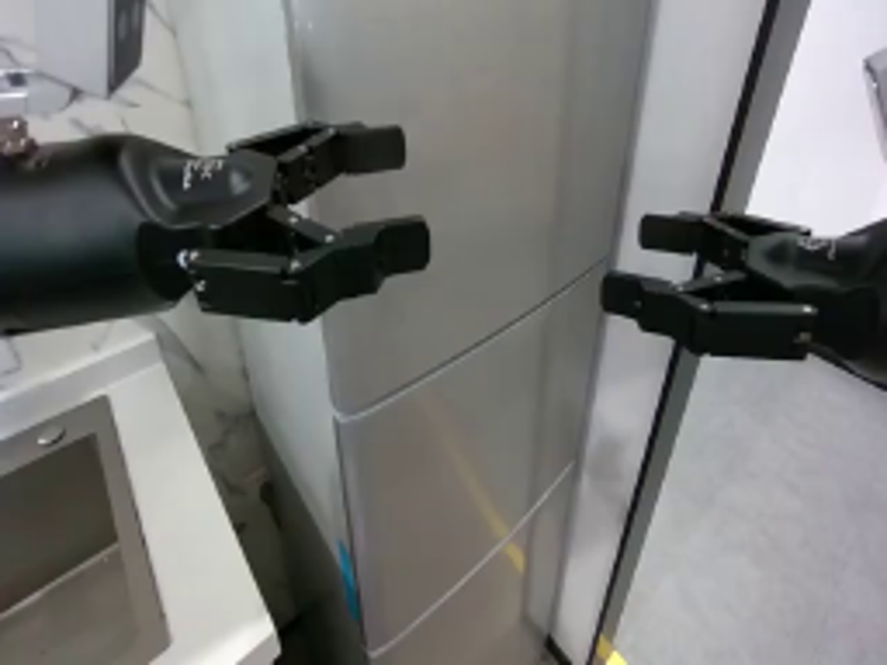
视觉工具实际返回图片 2
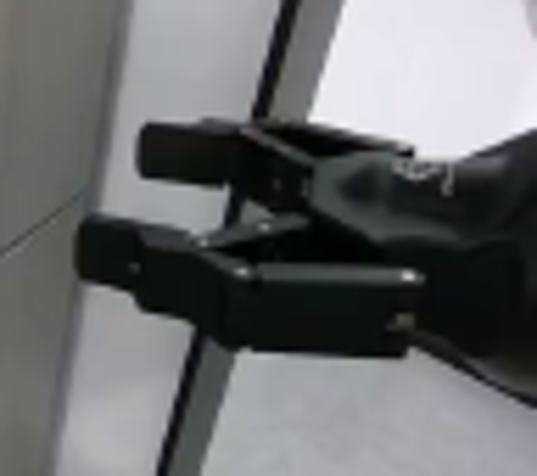
视觉工具实际返回图片 3

视觉工具实际返回图片 4
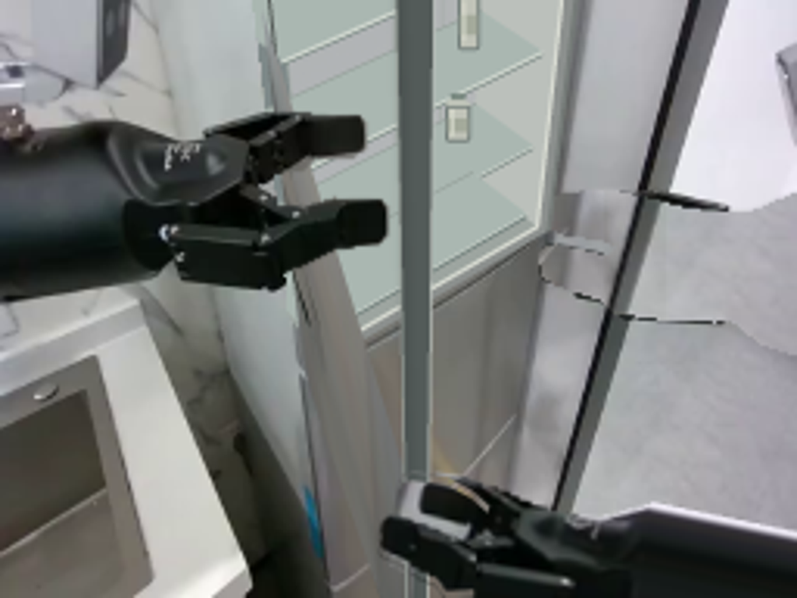
视觉工具实际返回图片 5
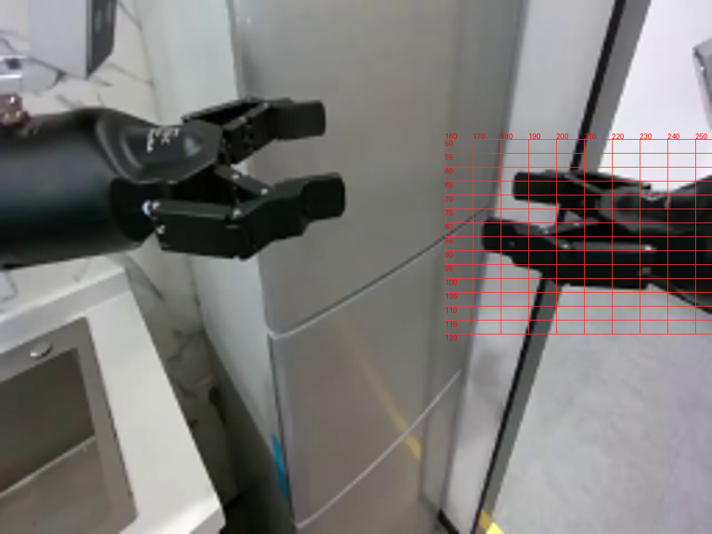
视觉工具实际返回图片 6
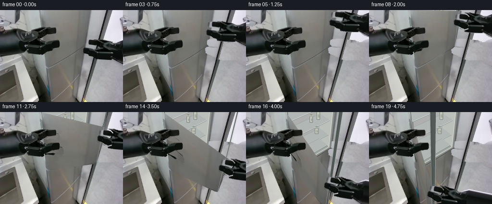
视觉工具实际返回图片 7
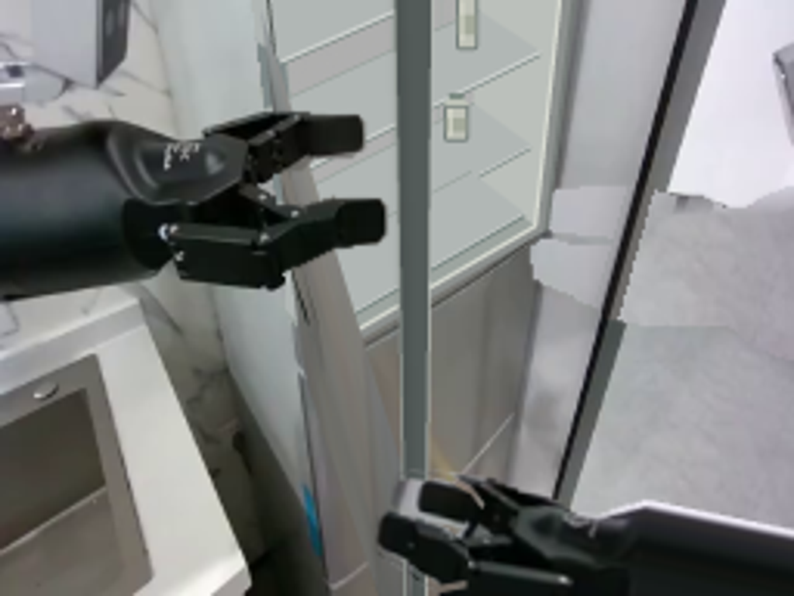
视觉工具实际返回图片 8

保存候选 4 份；完成命令 18 次；可验证图片返回 8 张。原始 API 响应与完整日志保留在本地。